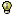
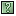

Welcome to the Chainsaw v2 Tutorial. Here you will learn how to effectively utilise the many features of Chainsaw.
Expressions
Color filters
Display filters
Conventions
To assist you, the following documentation conventions will be used
- Interesting items will be shown like this
- Things you should try during the tutorial will be shown like this
Outline
The built-in tutorial installs several "pretend" Receiver plugins that generate some example LoggingEvents and post
them into Log4j just like a real Receiver.
- If you would like to read more about Receivers first, then click here. (TODO)
When you are ready to begin the tutorial, click here, or click the "Start Tutorial" button in this dialog's toolbar.
Receivers
After you have said yes to the confirmation dialog, you should see 3 new tabs appear
in the main GUI. This is because the tutorial has installed 3 'Generator' Receivers into the Log4j engine.
- Confirm
this by showing the Receivers panel accessible either via the toolbar or the menu. The icon for this action is
Any installed receiver installed into Log4j, either via an external configuration file, or via the GUI, is shown in this panel. You
can create new Receivers, stop existing ones, or adjust their threshold.
- Try right clicking on a specific receiver and looking at the available menu options, but don't change anything just yet.
- When you are finished looking at the Receiver panel, hide it by clicking the 'X" close icon in the top right corner,
or toggling the Receivers panel by clicking the icon in the toolbar, or using the menu.
Tabs
You may have noticed that each of the tabs have specific names ("Generator X"). Chainsaw automatically looks inside
each received LoggingEvent for a special Application property to determine which tab to route an event to. If it cannot find
this property, it attempts to use a secondary property usually added via the SocketAppender or SocketHubAppender which
identify the remote host of these events. If neither of these are found, Chainsaw routes events to a default "Unknown" tab. You can learn more about
this whole process here. TODO
- You may also notice that the tabs have the receiver icon (). This is to indicate that new events are arriving for this tab. Additionally
if new events are not arriving, but there are events newer than the last time you looked at this tab, then the
 icon is shown.
icon is shown.
- Click on each tab and see how the icons shown in the tabs change.
- When you click on a specific tab, you should notice the events are streaming in.
Log Tabs
Each tab contains a series of LoggingEvents routed to it via the Chainsaw internals. This visual panel
is known as the Log Panel. It contains 3 main areas:
- Events panel - The top/central panel contains a table of all the events received, and the Refinement filter (more on this later)
- Event Detail panel - The bottom/central panel contains more details information of the currently selected event in the table.
- Logger Tree panel - the left hand panel contains all the distinct loggers known from the
received LoggingEvents represented in the natural dotted hierarchy.
The Logger Tree & Event Detail panels can be hidden by clicking on the 'X' close icon in their respective top left corners, or
by using the toolbar or menus. They are also contained within a split area, so you can adjust the amount
of visual space they take up to your liking.
- Try hiding/showing/resizing the Logger Tree and Event Detail panels to see how they affect your viewing area.
Events panel
The Events panel primary role is to display received events in a table. Events are colored based
on certain rules, with a default set of rules coloring a row based on the LoggingEvent level: Red for ERROR, Yellow for WARN.
Each of the columns can be moved and resized. When you exit, Chainsaw will remember these settings automatically.
- If you click on a column header, it will sort the viewable events by this column, and subsequent clicks will toggle between ascending and descending mode.
- Notice that the Level column displays an iconic representation of the Level. You can switch between this and Text mode by using the View->Display Level column as menu.
- The Throwable column shows only the first line of the stack trace, but if you click on a Throwable cell, you will notice a "..." button. Clicking this pops up a detailed view of the stack trace
- Try viewing the stack trace detail by clicking on a Throwable cell, and clicking the "..." button.
The popup menu on this panel contains some handy features:
- Scroll to Bottom - follows the new events as the arrive (sort of like the 'tail' command)
- Show Tooltips - you can hover the mouse cursor over an event row and Chainsaw will show you that events contents within the tooltip. Handy for glancing at more details of events.
Event Detail panel
The Event Detail panel shows a more detailed view of the currently selected LoggingEvent from the Events panel. The format of the event information
is determined by the layout chosen. Internally Chainsaw uses Log4j's Layout classes, so if you are familiar with them, you'll feel right at home.
The default layout uses a PatternLayout with HTML formatting.
- Try right clicking on the contents of the Event Detail panel and switching between the various Layouts included.
- Try clicking on the
 icon in the Event Detail toolbar, or popup menu to show the Layout Pattern editor, and edit it to see how changes are reflected.
icon in the Event Detail toolbar, or popup menu to show the Layout Pattern editor, and edit it to see how changes are reflected.
Logger Tree panel
TODO
Expressions
Expressions are used to define color and display rules in Chainsaw. An expression is a textual representation of a rule, and provides the ability to perform queries against a collection of logging events. As each logging event is examined by the rule, the operation associated with the rule is performed providing the event passes the rule's evaluation. For example, the event may be assigned a color or added to the display. Log4J's rule expression syntax provides access to all of the logging event's fields, a number of operators, and the ability to control precedence.
- Precedence can be controlled by applying parentheses to groups of expressions (usually used in combination with logical operators)
- All operators, operands and parentheses must be separated by spaces
- Single tick marks can be used to delimit multi-word operands
- Example: msg ~= 'my msg'
- NOTE: A context menu is available anywhere you can enter an expression in order to assist in constructing expressions (use the right-mouse click or ctrl-space to activate the context menu)
Define an expression:
- Select the field identifier (a keyword representing a logging event field) required to perform the evaluation. Field identifiers are not case sensitive. See the list of supported field identifiers below
- Example: use the MSG field identifier in an expression to evaluate the 'message' field of the logging event
- Select the operator needed to perform the evaluation. See the list of supported operators below.
-
Example: to perform a case-insensitive partial-text evaluation, use the ~= operator
- Define the value to be matched in the expression (required by all operators except logical operators).
-
Example: to display only events which are greater than or equal to level INFO, use the expression LEVEL >= INFO
- The field identifier/operator/operand combination itself is a valid expression, but can be used in combination with other expressions and logical operators (&&, ||) in order to define complex expressions
- Modify the precedence of expressions in a complex expression by surrounding the expression(s) in parentheses
Supported field identifiers:
- LOGGER
- LEVEL
- CLASS
- FILE
- LINE
- METHOD
- MSG
- NDC
- EXCEPTION
- TIMESTAMP
- THREAD
- PROP.[key name]
- NOTE: To build expressions using PROP (properties) field identifier, the key being evaluated must be added after the field identifier and a period
- Example: all events in the event table contain a 'log4jid' property (used during import/export of events). To refine the display to display only rows 50 through 60, the expression PROP.log4jid >= 50 && PROP.log4jid <= 60 can be used in the 'refine focus' field
NOTE: PROP keys are case sensitive. PROP.log4jid is not equivalent to PROP.LOG4JID
Supported operators:
| Symbol | Description |
| == | equals |
| ~= | case-insensitive partial-text match |
| != | not equals |
| LIKE | supports regular expressions |
| EXISTS | not null |
| < | inequality operators |
| <= |
| > |
| >= |
| && | logical and |
| || | logical or |
| ! | logical not |
Operator limitations:
- The equality operator can be used with the LEVEL identifier, but for the comparison to succeed, the right hand value must be in all uppercase (this applies to the combination of LEVEL keyword and the equality operator only - for example, use LEVEL == WARN instead of LEVEL == warn
- Inequality operators are supported for Levels (LEVEL > info) and anything that can be converted to a numeric value.
- Expressions using the timestamp field are not yet supported
Example expressions:
| To display all events with a level of info or greater | LEVEL >= INFO |
| To display all events which contain the words 'logged in' in the message | MSG ~= 'logged in' |
| To display all events which contain an exception | EXCEPTION EXISTS |
| To display all events associated with a PROP key of USERID with a value of 'tester' | PROP.USERID == tester |
| 'and' the first and second examples together, 'or'd with the third | ( LEVEL >= INFO && MSG ~= 'logged in' ) || EXCEPTION EXISTS |
Color filters
Each log panel can define color rules which can be used to colorize events in the event panel. Color rules are associated with each event panel and are saved when the application ends and loaded automatically when the application starts.
Define color rules:
- Open the color filter panel by selecting the 'current tab, log panel color filter' menu items, or by using the context (right-click mouse) menu in the events panel and selecting 'log panel color filter'
- Select 'new' to add a row
- Double-click on the 'expression' column
- Enter an expression (see Expressions)
- Select a color from the list or use the 'browse' button at the bottom of the color list to define a custom color
- Repeat steps 2 - 5 as needed
- Order the rules - rules are evaluated in order. Select a color rule entry and press the UP or DOWN icons on the panel as needed
- Apply the rules. The event panel will be updated based on the defined color rules
- If there are invalid expressions, a message at the bottom will direct you to hover the mouse over an expression to see the error as the entry's tooltip
- Fix errors as needed, apply and close the panel
Display filters (refine focus)
Events displayed in the event panel can be filtered in two ways: by focusing on a logger in the logger tree panel and by defining display filter rules in the 'refine focus' field.
NOTE:Display filter rules are not saved.
Define display rules:
- Move the cursor to the 'refine focus on' field
- Enter an expression (see Expressions)
- Alternatively, use the context (mouse right click) menu (available when the mouse pointer is over the events table) to modify the 'refine focus' field's expression based on the field and value under the mouse pointer. For example, if the mouse pointer is over the THREAD cell of an event which has a value of Thread-1, selecting set 'refine focus' field will assign the expression THREAD == 'Thread-1' to the refine focus field.
- The display will be updated automatically if the expression is valid and the contents of the 'refine focus' field have not changed for 1 second, showing only events which match the expression
- If the expression entered is invalid, an error message will available as the 'refine focus on' field's tooltip
- If the ENTER key is pressed when a valid expression is in the 'refine focus on' field, the expression is added to the refine focus drop down list and can be recalled later in the session
Shutting down the Tutorial
When you are finished with the tutorial, you can simply shutdown all the Generator receivers:
- Show the Receivers panel () and shutdown each of the Generator Receivers by using the
 icon.
icon.
For convenience you can simply click here or click on the Stop Tutorial button in this dialogs toolbar, and Chainsaw will stop all the tutorial generators for you (If you created any other non-Generator Receivers, they will be left untouched).
Transmission Ends